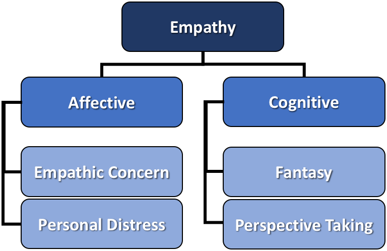

Current Projects.

Integrating Design Skills & Practices into Computing Education
2018 -
Design skills are often used as the "front door" to computing education, motivating students to engage with programming so they can gain computing literacy. However, skills such as protoyping, needfinding, and understanding users are often presented as part of the CS field. This masking of design is a disservice to students, teachers, researchers, and professionals. By recognizing the role that design plays in introductory computing education, we can begin to better understand how computing education and design intertwine to promote computing literacy.
Understanding "Useful" Empathy in UX Design
2018 -
Empathy with target population users is a hot topic in today's UX climate. Under the purported goal of inclusive software interface design, both industry leaders and academic researchers encourage UX designers to empathize with their users. However, empathy is a multidimensional construct. Different aspects of empathy may affect UX designers' abilities to create suitable interfaces for their target populations.
So far, I've conducted interviews with eight UX designers to explore the ways in which they leveraged cognitive empathy - understanding users' points of view - and affective empathy - identifying with users through emotion - in their design processes. In-progress work on this project is digging deeper into the differences in dimensional empathy between various populations of UX designers and the general population. Since the colloquial definition of empathy aligns better with affective empathy, these findings indicate a need to better scope discourse around empathy in the UX community to avoid misinterpretation, especially by novice or student UX designers.
Past Projects.
GenderMag-Teach
2017 - 2018
The GenderMag-Teach community provides support and resources for those who are interested in teaching gender-inclusive software design to their classes using the GenderMag method.
[GenderMag-Teach Community Wiki] [GenderMag-Teach Google Group]
Motivated by the observation that those who are unfamiliar with gender-inclusive interface design may face difficulties teaching the concepts to their students, we set out to discover the pedagogical content knowledge (PCK) that higher-ed teachers need to teach the GenderMag method effectively.
Toward this end, I conducted an action research study with the help of nine teacher-researchers across eight U.S. universities who collectively taught gender-inclusive interface design to more than 400 students. Through interviews with the teachers themselves and in-class observations, I identified 11 pieces of PCK for teaching gender-inclusive software design. I hope to evalute these PCKs in future work and determine which are the most crucial for educators to embrace as they teach the principles of ethical software interfaces. This community is still active and growing as more and more educators become interested in teaching gender-inclusive software design.
Publications:
- ACM ICER'18: Pedagogical Content Knowledge for Teaching Inclusive Design
- Oregon State University Honors Thesis of the same name
SmartPhotography
2017 - 2018
With the advent of smartphones, anyone can take selfies and portraits quickly and cheaply. However, not everyone is a professional photographer. Most users are not trained in lighting and pose principles that play into portraits. The result of this is low-quality selfies and portraits. Pro photographers follow known portraiture setups to produce high-quality pictures. Can we enable average people, armed only with their phones, to mimic these professional setups to produce high-quality selfies?
To explore this question, I designed and conducted a formative user study to learn our target demographic's motivations and attitudes toward smartphone photography. Then, informed by the study, we created a proof-of-concept augmented reality iOS app to guide users to replicate portraiture setups. The resulting app reads in the lighting in the user's environment with the front-facing camera and directs the user to position themselves to achieve optimal lighting, then leverages gamification principles to "score" the user on how closely they achieved their target setup.
In collaboration with Adobe Research's Creative Intelligence Lab. Mentors: Jingwan (Cynthia) Lu, Jose Echevarria, & Radomir Mech. Interface tech is patent pending.


The GenderMag Project
2016 - 2018
Description available soon.
Publications:
- ACM ICER'18: Semi-Automating (or not) a Socio-Technical Method for Socio-Technical Systems
- IEEE VL/HCC'18 workshop: Gender Biases in Software for Problem-Solving
- Chapter in New Perspectives in End-User Development: Toward Theory-Based End-User Software Engineering
- ACM CHI'17: Gender-Inclusiveness Personas vs. Stereotyping: Can We Have it Both Ways?
- IEEE VL/HCC'16: GenderMag Experiences in the Field: The Whole, the Parts, and the Workload
The Idea Garden
2015 - 2016
Description available soon.
Publications:
- Journal of Visual Languages and Computing: General Principles for a Generalized Idea Garden
- ACM CHI'16: Programming, Problem Solving, and Self-Awareness: Effects of Explicit Guidance
- Chapter in New Perspectives in End-User Development: Toward Theory-Based End-User Software Engineering